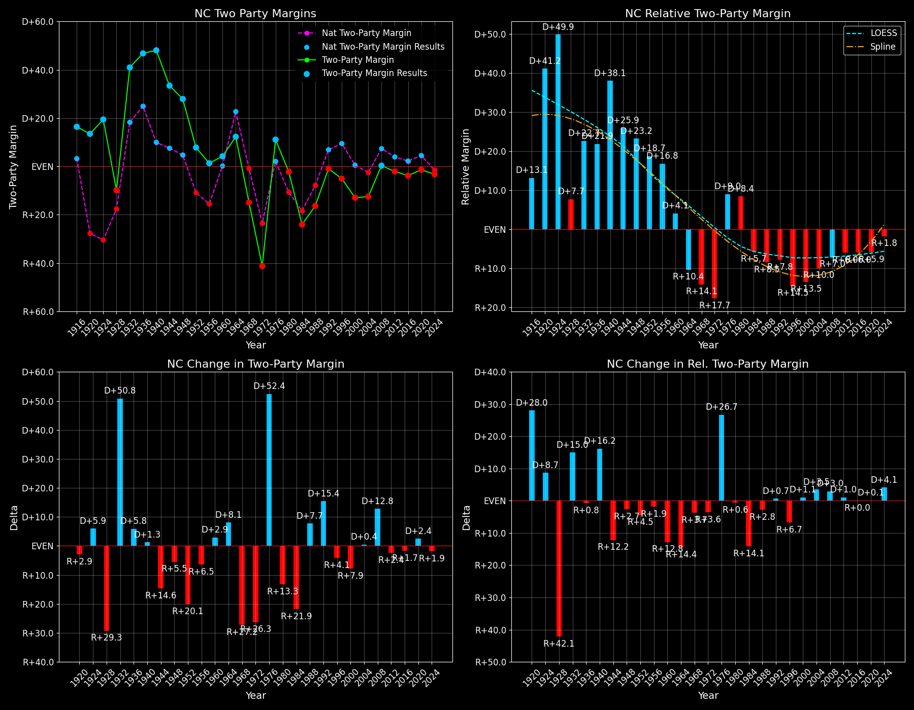

North Carolina (NC) — Statewide

Margins · 3rd-Party share · Pres. deltas

Relative margins · Relative 3rd-Party · Rel. deltas
North Carolina (NC) — Total Data
| Year | D | R | State Margin | Nat. Margin | Rel. Margin | Total votes | EVs |
|---|---|---|---|---|---|---|---|
| 1968 | 464,113(29.2%) | 627,192(39.5%) | R+10.3 | R+0.7 | R+9.6 | 1,587,493 | 13 |
| 1972 | 438,705(28.9%)(Δ -25,408) | 1,054,889(69.5%)(Δ 427,697) | R+40.6(Δ R+30.3) | R+23.1(Δ R+22.4) | R+17.4(Δ R+7.9) | 1,518,612 | 13 |
| 1976 | 927,365(55.3%)(Δ 488,660) | 741,960(44.2%)(Δ -312,929) | D+11.0(Δ D+51.6) | D+2.1(Δ D+25.2) | D+9.0(Δ D+26.4) | 1,677,906 | 13 |
| 1980 | 875,635(47.2%)(Δ -51,730) | 915,018(49.3%)(Δ 173,058) | R+2.1(Δ R+13.2) | R+9.7(Δ R+11.8) | D+7.6(Δ R+1.4) | 1,855,833 | 13 |
| 1984 | 824,287(37.9%)(Δ -51,348) | 1,346,481(61.9%)(Δ 431,463) | R+24.0(Δ R+21.9) | R+18.2(Δ R+8.5) | R+5.8(Δ R+13.4) | 2,175,361 | 13 |
| 1988 | 890,167(41.7%)(Δ 65,880) | 1,237,258(58.0%)(Δ -109,223) | R+16.3(Δ D+7.7) | R+7.7(Δ D+10.5) | R+8.5(Δ R+2.7) | 2,134,370 | 13 |
| 1992 | 1,114,042(42.7%)(Δ 223,875) | 1,134,661(43.4%)(Δ -102,597) | R+0.8(Δ D+15.5) | D+5.6(Δ D+13.3) | R+6.3(Δ D+2.2) | 2,611,850 | 14 |
| 1996 | 1,107,849(44.0%)(Δ -6,193) | 1,225,938(48.7%)(Δ 91,277) | R+4.7(Δ R+3.9) | D+8.5(Δ D+3.0) | R+13.2(Δ R+6.9) | 2,515,807 | 14 |
| 2000 | 1,257,692(43.2%)(Δ 149,843) | 1,631,163(56.0%)(Δ 405,225) | R+12.8(Δ R+8.1) | D+0.5(Δ R+8.0) | R+13.3(Δ R+0.1) | 2,911,262 | 14 |
| 2004 | 1,525,849(43.6%)(Δ 268,157) | 1,961,166(56.0%)(Δ 330,003) | R+12.4(Δ D+0.4) | R+2.5(Δ R+3.0) | R+10.0(Δ D+3.4) | 3,501,007 | 15 |
| 2008 | 2,142,651(49.7%)(Δ 616,802) | 2,128,474(49.4%)(Δ 167,308) | D+0.3(Δ D+12.8) | D+7.3(Δ D+9.7) | R+6.9(Δ D+3.0) | 4,310,789 | 15 |
| 2012 | 2,178,391(48.4%)(Δ 35,740) | 2,270,395(50.4%)(Δ 141,921) | R+2.0(Δ R+2.4) | D+3.9(Δ R+3.4) | R+5.9(Δ D+1.0) | 4,505,372 | 15 |
| 2016 | 2,189,316(46.2%)(Δ 10,925) | 2,362,631(49.8%)(Δ 92,236) | R+3.7(Δ R+1.6) | D+2.1(Δ R+1.8) | R+5.8(Δ D+0.1) | 4,741,564 | 15 |
| 2020 | 2,684,292(48.6%)(Δ 494,976) | 2,758,775(49.9%)(Δ 396,144) | R+1.3(Δ D+2.3) | D+4.5(Δ D+2.4) | R+5.8(Δ R+0.0) | 5,524,804 | 15 |
| 2024 | 2,715,375(47.6%)(Δ 31,083) | 2,898,423(50.9%)(Δ 139,648) | R+3.2(Δ R+1.9) | R+1.5(Δ R+5.9) | R+1.7(Δ D+4.1) | 5,699,141 | 16 |
Column explanations
- Δ
- Change (delta) in the value from the previous election year.
- Year
- Election year.
- D
- Number of votes for the Democratic candidate (raw count(pct%)).
- R
- Number of votes for the Republican candidate (raw count(pct%)).
- State Margin
- Margin between the two major-party candidates, including third-party votes ((D - R)/total).
- Nat. Margin
- The national presidential margin for that year, including third-party votes ((D_total - R_total)/total_votes).
- Rel. Margin
- The presidential margin relative to the national presidential margin (Margin - Nat. Margin).
- Total votes
- Total voter turnout or ballots cast (when provided).
- EVs
- Number of electoral votes allocated to this state or unit.
North Carolina (NC) — Third-Party Data
| Year | D | R | Other votes | State 3rd-Party Share | 3rd-Party Nat. Share | 3rd-Party Rel. Share |
|---|---|---|---|---|---|---|
| 1968 | 464,113(29.2%) | 627,192(39.5%) | 496,188(31.3%) | 31.26% | 13.86% | 17.40% |
| 1972 | 438,705(28.9%)(Δ -25,408) | 1,054,889(69.5%)(Δ 427,697) | 25,018(1.6%) | 1.65% | 1.80% | -0.16% |
| 1976 | 927,365(55.3%)(Δ 488,660) | 741,960(44.2%)(Δ -312,929) | 8,581(0.5%) | 0.51% | 1.90% | -1.39% |
| 1980 | 875,635(47.2%)(Δ -51,730) | 915,018(49.3%)(Δ 173,058) | 65,180(3.5%) | 3.51% | 8.24% | -4.73% |
| 1984 | 824,287(37.9%)(Δ -51,348) | 1,346,481(61.9%)(Δ 431,463) | 4,593(0.2%) | 0.21% | 0.67% | -0.46% |
| 1988 | 890,167(41.7%)(Δ 65,880) | 1,237,258(58.0%)(Δ -109,223) | 6,945(0.3%) | 0.33% | 0.98% | -0.66% |
| 1992 | 1,114,042(42.7%)(Δ 223,875) | 1,134,661(43.4%)(Δ -102,597) | 363,147(13.9%) | 13.90% | 19.55% | -5.64% |
| 1996 | 1,107,849(44.0%)(Δ -6,193) | 1,225,938(48.7%)(Δ 91,277) | 182,020(7.2%) | 7.24% | 10.05% | -2.82% |
| 2000 | 1,257,692(43.2%)(Δ 149,843) | 1,631,163(56.0%)(Δ 405,225) | 22,407(0.8%) | 0.77% | 3.75% | -2.98% |
| 2004 | 1,525,849(43.6%)(Δ 268,157) | 1,961,166(56.0%)(Δ 330,003) | 13,992(0.4%) | 0.40% | 1.00% | -0.60% |
| 2008 | 2,142,651(49.7%)(Δ 616,802) | 2,128,474(49.4%)(Δ 167,308) | 39,664(0.9%) | 0.92% | 1.42% | -0.50% |
| 2012 | 2,178,391(48.4%)(Δ 35,740) | 2,270,395(50.4%)(Δ 141,921) | 56,586(1.3%) | 1.26% | 1.73% | -0.48% |
| 2016 | 2,189,316(46.2%)(Δ 10,925) | 2,362,631(49.8%)(Δ 92,236) | 189,617(4.0%) | 4.00% | 5.73% | -1.73% |
| 2020 | 2,684,292(48.6%)(Δ 494,976) | 2,758,775(49.9%)(Δ 396,144) | 81,737(1.5%) | 1.48% | 1.84% | -0.36% |
| 2024 | 2,715,375(47.6%)(Δ 31,083) | 2,898,423(50.9%)(Δ 139,648) | 85,343(1.5%) | 1.50% | 1.88% | -0.38% |
Column explanations
- Year
- Election year.
- D
- Number of votes for the Democratic candidate (raw count(pct%)).
- R
- Number of votes for the Republican candidate (raw count(pct%)).
- Other votes
- Number of votes for third-party (other) candidates (raw count(pct%)).
- State 3rd-Party Share
- Share of the vote received by third-party (other) candidates.
- 3rd-Party Nat. Share
- The national third-party share for that year (3rd-Party votes / total votes).
- 3rd-Party Rel. Share
- Third-party share relative to the national third-party share (3rd-Party share - Nat. 3rd-Party share).

Two-party margins · relative · deltas
North Carolina (NC) — Two-Party Data
| Year | D | R | 2-Party Margin | 2-Party Nat. Margin | 2-Party Rel. Margin | EVs |
|---|---|---|---|---|---|---|
| 1968 | 464,113(42.5%) | 627,192(57.5%) | R+14.9 | R+0.8 | R+14.1 | 13 |
| 1972 | 438,705(29.4%)(Δ -25,408) | 1,054,889(70.6%)(Δ 427,697) | R+41.3(Δ R+26.3) | R+23.6(Δ R+22.8) | R+17.7(Δ R+3.6) | 13 |
| 1976 | 927,365(55.6%)(Δ 488,660) | 741,960(44.4%)(Δ -312,929) | D+11.1(Δ D+52.4) | D+2.1(Δ D+25.7) | D+9.0(Δ D+26.7) | 13 |
| 1980 | 875,635(48.9%)(Δ -51,730) | 915,018(51.1%)(Δ 173,058) | R+2.2(Δ R+13.3) | R+10.6(Δ R+12.7) | D+8.4(Δ R+0.6) | 13 |
| 1984 | 824,287(38.0%)(Δ -51,348) | 1,346,481(62.0%)(Δ 431,463) | R+24.1(Δ R+21.9) | R+18.3(Δ R+7.7) | R+5.7(Δ R+14.1) | 13 |
| 1988 | 890,167(41.8%)(Δ 65,880) | 1,237,258(58.2%)(Δ -109,223) | R+16.3(Δ D+7.7) | R+7.8(Δ D+10.5) | R+8.5(Δ R+2.8) | 13 |
| 1992 | 1,114,042(49.5%)(Δ 223,875) | 1,134,661(50.5%)(Δ -102,597) | R+0.9(Δ D+15.4) | D+6.9(Δ D+14.7) | R+7.8(Δ D+0.7) | 14 |
| 1996 | 1,107,849(47.5%)(Δ -6,193) | 1,225,938(52.5%)(Δ 91,277) | R+5.1(Δ R+4.1) | D+9.5(Δ D+2.6) | R+14.5(Δ R+6.7) | 14 |
| 2000 | 1,257,692(43.5%)(Δ 149,843) | 1,631,163(56.5%)(Δ 405,225) | R+12.9(Δ R+7.9) | D+0.5(Δ R+8.9) | R+13.5(Δ D+1.1) | 14 |
| 2004 | 1,525,849(43.8%)(Δ 268,157) | 1,961,166(56.2%)(Δ 330,003) | R+12.5(Δ D+0.4) | R+2.5(Δ R+3.0) | R+10.0(Δ D+3.5) | 15 |
| 2008 | 2,142,651(50.2%)(Δ 616,802) | 2,128,474(49.8%)(Δ 167,308) | D+0.3(Δ D+12.8) | D+7.4(Δ D+9.9) | R+7.0(Δ D+3.0) | 15 |
| 2012 | 2,178,391(49.0%)(Δ 35,740) | 2,270,395(51.0%)(Δ 141,921) | R+2.1(Δ R+2.4) | D+3.9(Δ R+3.4) | R+6.0(Δ D+1.0) | 15 |
| 2016 | 2,189,316(48.1%)(Δ 10,925) | 2,362,631(51.9%)(Δ 92,236) | R+3.8(Δ R+1.7) | D+2.2(Δ R+1.7) | R+6.0(Δ R+0.0) | 15 |
| 2020 | 2,684,292(49.3%)(Δ 494,976) | 2,758,775(50.7%)(Δ 396,144) | R+1.4(Δ D+2.4) | D+4.5(Δ D+2.3) | R+5.9(Δ D+0.1) | 15 |
| 2024 | 2,715,375(48.4%)(Δ 31,083) | 2,898,423(51.6%)(Δ 139,648) | R+3.3(Δ R+1.9) | R+1.5(Δ R+6.0) | R+1.8(Δ D+4.1) | 16 |
Column explanations
- Δ
- Change (delta) in the value from the previous election year.
- Year
- Election year.
- D
- Number of votes for the Democratic candidate (raw count(pct%)).
- R
- Number of votes for the Republican candidate (raw count(pct%)).
- 2-Party Margin
- Margin between the two major-party candidates, ignoring third-party votes ((D - R)/(D + R)).
- 2-Party Nat. Margin
- The national presidential margin for that year, including third-party votes ((D_total - R_total)/total_votes).
- 2-Party Rel. Margin
- The presidential margin relative to the national presidential margin (Margin - Nat. Margin).
- EVs
- Number of electoral votes allocated to this state or unit.